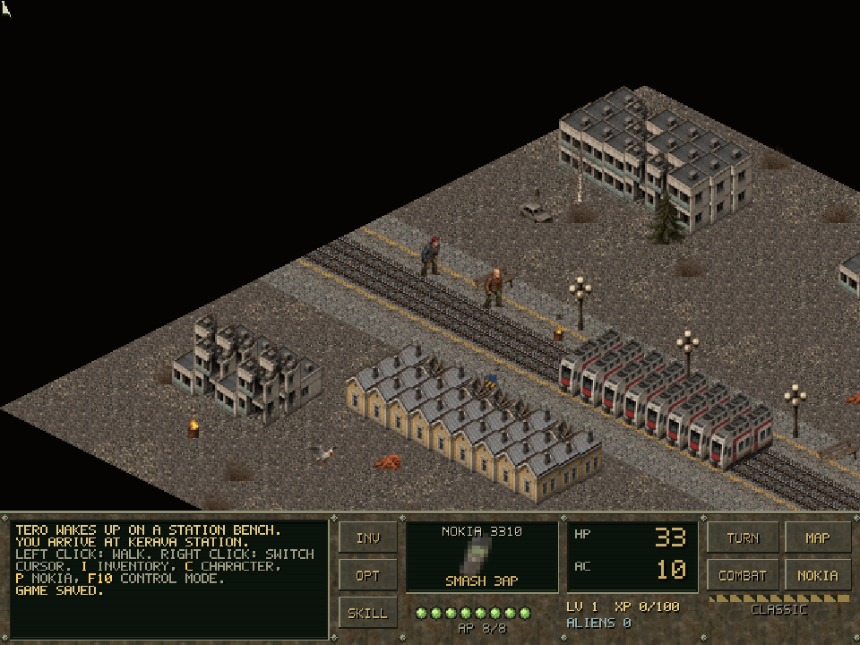

Start here / Nord Engine
Make something worth playing.
Your idea. Your game. Your engine.
A little engine.
A lot to explore.
Build 2D games, 3D worlds and desktop apps. Learn one step at a time, then keep the reference nearby.
Start building →Browse the API- 01 · NEW TO NORD?Get your first winOpen a project, press Play, change something. No programming experience needed.
- 02 · UNDERSTAND THE PIECESHow Nord worksEntities, scripts, Phaser, Babylon, WebGL and WASM in plain English.
- 03 · LEARN BY DOINGBuild along with a tutorialSmall lessons with a goal, working code and a next step.
- 04 · FIND AN ANSWERKeep the reference handyNord classes and components, desktop APIs and the underlying engines.
Made with Nord
These are real bundled examples. Open them in the editor to explore their scenes and scripts.
